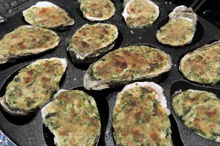

Oysters Rockefeller

Description
Oysters Rockefeller is a rich seafood appetizer. This recipe adds three types of cheese to the creamy sauce for
an even
more decadent version of the classic.
Ingredients
- 48 fresh, unopened oysters
- 1 ½ cups beer
- 2 cloves garlic
- 7 black peppercorns
- seasoned salt to taste
- ½ cup butter
- 1 onion, chopped
- 1 clove garlic, crushed
- 1 (10 ounce) package frozen chopped spinach, thawed and drained
- 8 ounces Monterey Jack cheese, shredded
- 8 ounces fontina cheese, shredded
- 8 ounces mozzarella cheese, shredded
- ½ cup milk
- 2 teaspoons salt, or to taste
- 1 teaspoon ground black pepper
- 2 tablespoons fine bread crumbs
Steps
-
Step 1 Clean oysters, and place them in a large stockpot. Pour in beer and enough water to cover
oysters; add 2 cloves of
garlic, peppercorns, and seasoned salt. Bring to a boil. Remove from heat, drain, and cool.
-
Step 2Preheat the oven to 425 degrees F (220 degrees C.)
-
Step 3Once oysters are cooled, break off and discard the top shell. Arrange oysters on a baking
sheet.
-
Step 4Melt butter in a saucepan over medium heat. Cook onion and garlic in butter until soft.
Reduce heat to low; stir in
spinach, Monterey Jack, fontina, and mozzarella. Cook until cheese melts, stirring frequently. Stir in milk;
season with
salt and pepper. Spoon sauce over each oyster, just filling the shell. Sprinkle with bread crumbs.
-
Step 5Bake in the preheated oven until golden and bubbly, approximately 8 to 10 minutes.